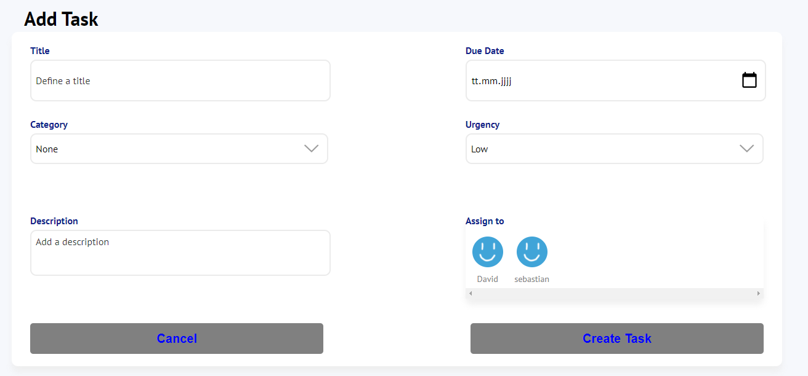
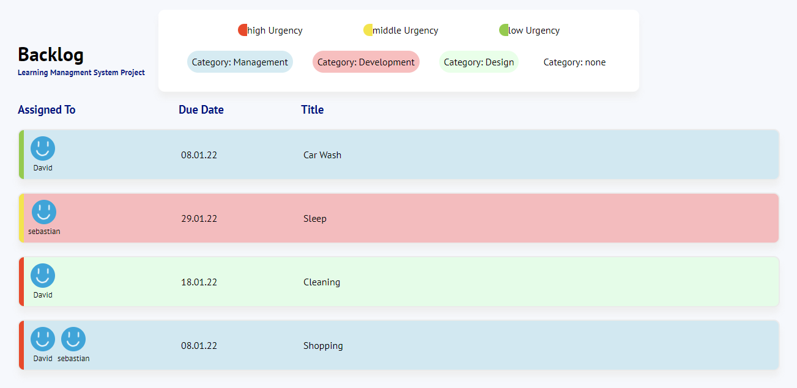
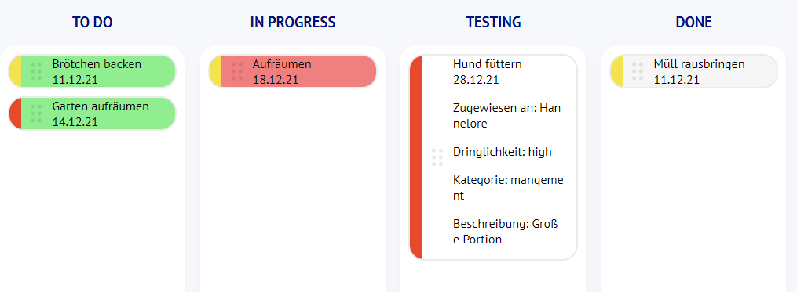

Help
Learning Management System Project
First Steps
Welcome to the join page of: Nils Spiller, David Heckhoff and Sebastian Funke.
This is a project management tool to plan tasks and assign them to people.
1. Add Task
In the 'Addtask' Area you can add individual Tasks.
Enter Title, Category, Description, Due Date, Importance and assign the Task to a Person.
After all Fields have been filled in, the Task is created with the 'Create Task'
Button.
2. Backlog
The Tasks that have been created are clearly listed in the Backlog.
These Tasks have not yet started.
After clicking on the Task, it will be handed over to the Board.
3. Board
The Board consists of four Sections.
With the Mouse button pressed, each Task can be moved to a different Section.
Further Informations can be displayed by clicking on a Task.
In the 'todo' Section the Tasks that are
to be processed next are listed.
If the Mouse is hovered over an Task in this Section, a Button appears that sends this Task back to the Backlog.
The 'in progress' Section lists Tasks that are currently being processed.
The
'testing' Section lists Tasks that have been completed but are still being tested for completion.
The 'done' Section lists Tasks that have been successfully tested and thus fully processed.
In this Section a Button
appears when hovering to permanently delete this Task.